全肤质美妆真心分享｜马来西亚本地朋友实测好物
哈喽大家好～ 这一整套美妆，都是我身边油皮、混油皮的朋友们长期自用、互相推荐、一起试出来的好物。 我自己本身是干皮，也亲自试用过这一系列产品，结合干皮使用感受加上油皮朋友真实体验，如实分享优点和小缺点，不夸大、不强行安利。
马来西亚常年高温潮湿、容易出汗，油皮很容易出油光、底妆斑驳、眼妆晕染、妆容快速脱妆。 经过多位朋友长期试用筛选，整理出这一套控油耐汗的完整彩妆，全部为真实使用心得，大家可以安心参考。
1. MISTINE 控油持妆粉底液
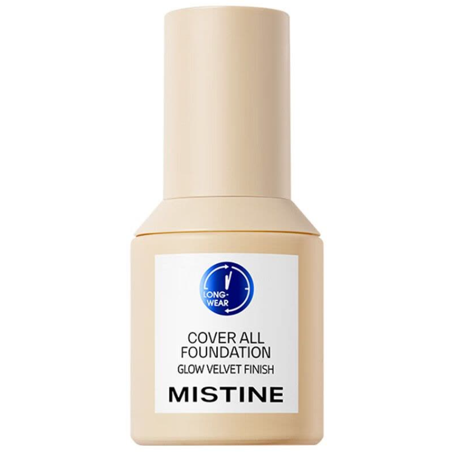
油皮、混油皮朋友常用的控油型底妆,质地清爽哑光，36小时持妆防汗，能很好地修饰毛孔和轻微痘印，闷热天气也不容易泛油斑驳。 我本身是干皮试用，上脸不拔干，但需要做好妆前保湿。
优点：控油力强、防汗防脱妆、妆面干净雾面
缺点：干皮需要做好妆前保湿
小建议：用湿海绵少量多次拍开，妆感更轻薄服帖
2. PRAMY 控油定妆喷雾
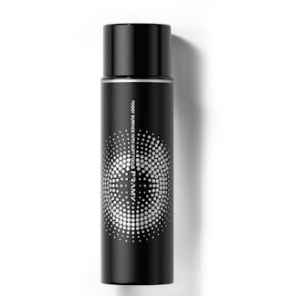
油皮定妆必备，成膜速度快，控油持妆效果好，能牢牢锁住底妆，减少出油导致的斑驳和氧化。 我干皮使用时，只需要轻喷一次，不会拔干紧绷。
优点：控油持妆、成膜快、防汗防蹭
缺点：距离过近喷洒容易花妆
小建议：化完全妆后，距离脸20cm左右轻喷，自然风干
3. PRAMY 控油散粉
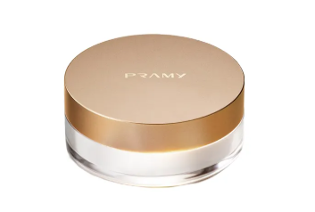
油皮、混油皮的控油神器，粉质细腻柔焦，上脸瞬间磨皮，吸附多余油脂，让妆面保持清爽哑光，减少出油后的油光和毛孔问题。 我干皮只需要轻压T区即可，全脸使用会有点拔干。
优点：控油力强、粉质细腻、柔焦磨皮
缺点：干性区域厚涂容易卡粉
小建议：用粉扑轻轻按压出油部位，再用刷子扫去余粉
4. FOCALLURE 砍刀眉笔
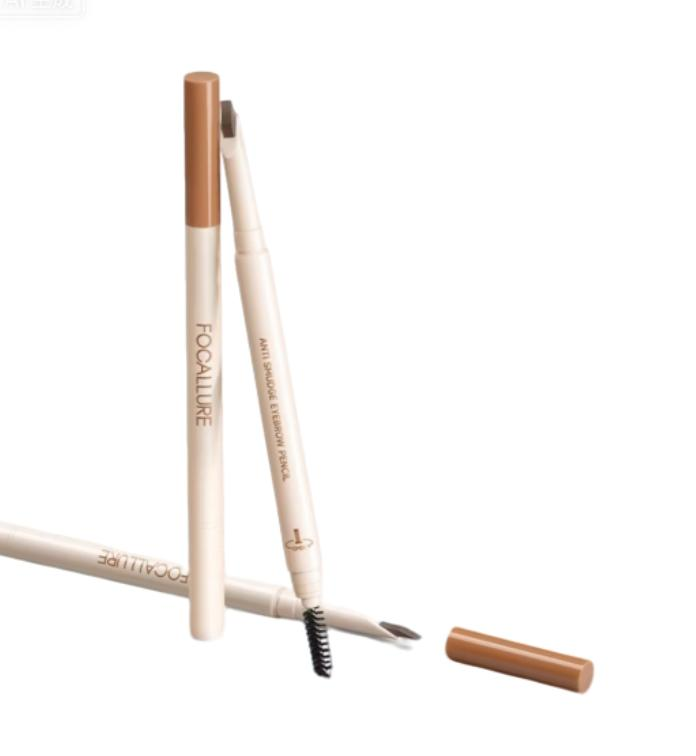
防水防汗表现稳定，适合马来西亚湿热天气，不容易脱眉晕染，砍刀头新手也能轻松画出自然的野生眉。 我干皮使用上色顺滑，不会干涩结块。
优点：耐汗持久、新手友好、自带眉刷晕染
缺点：大量出汗后眉色会变淡
小建议：顺着眉形轻画，用眉刷晕染更自然，最后用散粉轻扫定妆
5. Judydoll 极细眼线液笔
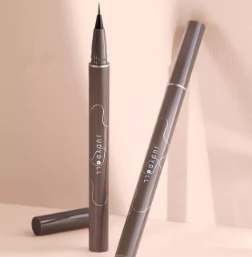
极细笔头，出水流畅不晕染，油皮眼周出油也不容易花妆，能画出自然的内眼线和眼尾，新手也很好控制。 我干皮使用笔触顺滑，不拉扯眼周皮肤。
优点：极细好画、防晕染、防水防汗
缺点：干了之后卸妆需要耐心
小建议：画完之后等几秒让它干透，再眨眼就不容易晕了
6. MISTINE 水润防晒乳
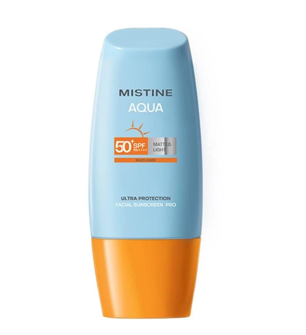
油皮、混油皮友好的防晒，质地水润不油腻，上脸成膜快，不闷痘，SPF50+ PA+++的防晒力足够日常通勤和户外使用，也可以作为妆前打底。 我干皮使用滋润度适中，不会拔干。
优点：清爽不油腻、成膜快、日常防晒力足够
缺点：大量出汗后需要补涂
小建议：护肤最后一步均匀涂抹，等待成膜后再上底妆
7. FOCALLURE 控油气垫
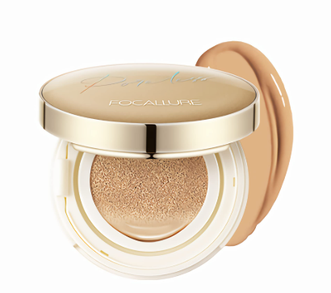
油皮快速上妆神器，气垫质地轻薄透气，自带的粉扑上妆方便，遮瑕力中等偏上，能快速均匀肤色，适合日常快速上妆和外出补妆。 我干皮上妆自然服帖，不会拔干卡粉。
优点：上妆快速、方便补妆、透气不闷脸
缺点：重度瑕疵需要叠加遮瑕
小建议：少量多次拍开，妆感更自然，出油后用吸油纸轻压再补妆
8. Maybelline Sky High 防水睫毛膏
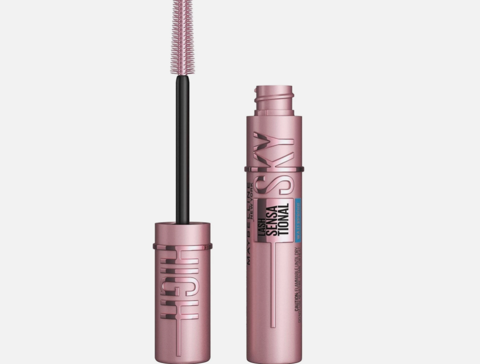
防水防汗不晕染，刷头能刷出根根分明的睫毛，拉长效果好，油皮眼周出油也不容易变成熊猫眼，持妆一整天。 我干皮使用也不会结块苍蝇腿，刷完睫毛很轻盈。
优点：防水防晕、拉长效果好、不结块
缺点：防水款需要专用卸妆产品
小建议：先刷一层打底，再叠加一层，效果更持久浓密
9. FOCALLURE 哑光控油粉底液
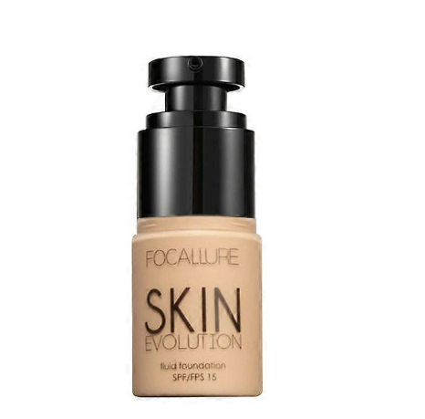
油皮专属哑光粉底液，控油力强，能打造雾面妆感，修饰毛孔和轻微瑕疵，持妆稳定，不容易氧化暗沉，适合日常通勤和上学使用。 我干皮直接使用会偏干，干皮记得提前做好保湿。
优点：哑光雾面、控油持妆、不易氧化
缺点：滋润度偏低，干皮需做好妆前保湿
小建议：搭配保湿妆前乳，少量多次推开，妆感更服帖
哈喽大家好～ 这一整套美妆，都是我身边干皮、混干皮朋友长期自用、互相推荐筛选出来的滋润好物。 我自己本身是干皮，全程亲自试用，结合自身肤感加上多位干皮朋友实测，真实分享每一款的使用效果，不夸大、不踩雷。
马来西亚天气炎热、室内长期冷气，干皮很容易底妆拔干、卡细纹、起皮斑驳。 这一套全部主打保湿滋润、服帖养肤，适合本地气候与长期待空调房的干皮人群。
1. YOU Sunbrella 系列防晒（两款可选）
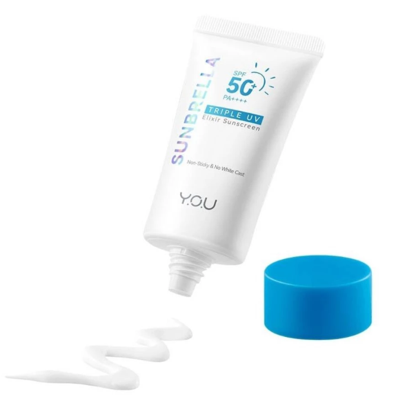
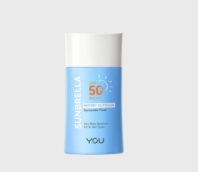
干皮朋友一致好评的两款滋润型防晒，同系列不同质地，都主打保湿不拔干，温和亲肤，上脸服帖不搓泥，很适合作为妆前打底使用。
【Triple UV Elixir款】：轻薄乳状质地，8小时控油，SPF50+ PA++++，混干皮也适用，成膜后清爽不泛白。
【Watery Outdoor款】：水润液状质地，防水防汗，10秒速干，敏感肌也通过测试，上脸不闷痘。
优点：水润保湿、不拔干、提亮肤感、同链接两款可选
缺点：高强度暴晒需要定时补涂
小建议：干皮/混干皮日常通勤、上课、室内外通用，两款可根据肤感选择
2. YOU Cloud Touch 柔焦定妆散粉
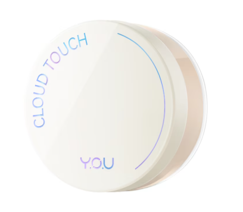
专为干皮设计的保湿型散粉，粉质细腻柔焦，24小时控油同时兼顾保湿，不会让皮肤拔干、卡干纹，还带有抗氧化和提亮效果。
优点：保湿定妆、柔焦毛孔、防水防汗、敏感肌友好
缺点：控油力度有限，大油皮不太适合
小建议：只轻压T区定妆，脸颊用余粉轻轻带过即可
3. YOU Caffeine Lift 高遮瑕保湿遮瑕液
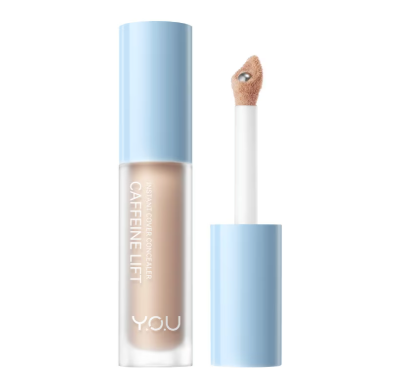
干皮友好的滋润型遮瑕，添加咖啡因成分，质地顺滑不卡纹，24小时高遮盖力，能很好地遮盖黑眼圈、痘印和泛红，上脸不厚重不结块。
优点：滋润服帖、高遮盖力、不卡眼下细纹、质地轻薄
缺点：厚涂容易有堆积感
小建议：少量点涂瑕疵位置，用指腹轻拍推开，边缘晕染自然
4. YOU Caffeine Lift V-Boost Serum Cushion 气垫
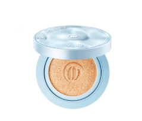
干皮懒人必备的养肤气垫，添加咖啡因精华，滋润度拉满，SPF45 PA+++自带防晒，24小时持妆不拔干，上脸自带柔光妆效，快速均匀肤色。
优点：保湿服帖、快速上妆、自带防晒、养肤配方
缺点：重度瑕疵需要叠加遮瑕
小建议：用粉扑少量多次拍开，打造清透伪素颜妆效，外出补妆超方便
5. YOU Cloud Touch 烟酰胺提亮妆前乳/养肤底妆
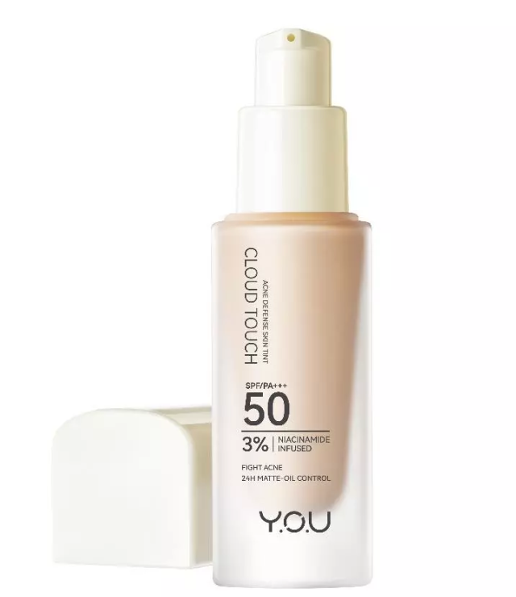
干皮专属的24小时提亮养肤底妆，添加3%烟酰胺，自带SPF50 PA+++防晒，质地轻薄水润，能均匀肤色、打造自然光泽肌，可直接作为底妆使用。
优点：水润提亮、自带防晒、养肤配方、妆感自然
缺点：遮瑕力中等，重度瑕疵需叠加遮瑕
小建议：干皮可直接薄涂作为日常底妆，混干皮可叠加在粉底液前提亮
6. YOU Lashboom 防水浓密睫毛膏
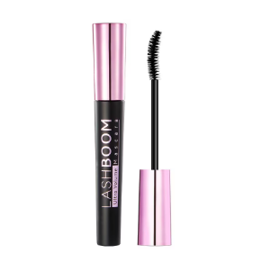
干皮友好的睫毛膏，24小时防水防晕染，能打造5倍浓密卷翘效果，刷头设计贴合眼型，刷出根根分明的睫毛，不结块、不晕妆，眼周干燥也不会拉扯皮肤。
优点：防水防晕、浓密卷翘、不结块、持妆久
缺点：需要用专用卸妆产品清洁
小建议：先刷一层打底，再叠加一层，效果更持久浓密，适合干皮眼周脆弱的姐妹
7. YOU Teardrop Brow 双头防水眉笔
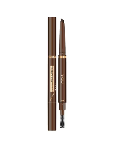
专为干皮和敏感肌设计的双头眉笔，笔芯顺滑不干涩，不会拉扯干燥的眼周皮肤，防水防汗，自带眉刷晕染，新手也能轻松画出自然眉形。
优点：滋润好上色、新手友好、不易结块、自带眉刷
缺点：大汗环境需要简单定妆
小建议：顺着眉形轻手描画，用眉刷晕染更自然，最后用散粉轻扫定妆
8. FOCALLURE 防水眼线胶笔
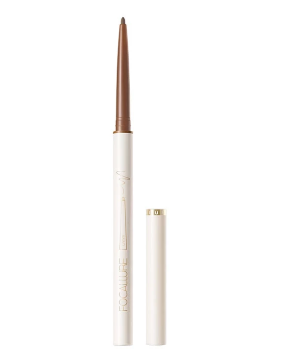
干皮友好的极细眼线胶笔，笔芯软糯顺滑，不刺激干燥脆弱的眼周，防水防晕染，不拉扯皮肤，新手也能轻松画出精致眼线。
优点：低敏温和、顺滑好画、不易晕妆、新手友好
缺点：用完需要及时盖紧盖子防止干芯
小建议：淡妆细画眼尾即可，减少眼周负担，深棕色款更适合日常温柔妆效
9. DAZZLE ME Get a Grip! 保湿定妆喷雾
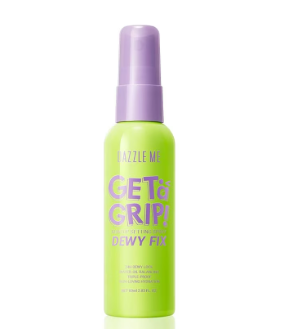
干皮/混干皮专属的保湿定妆喷雾，成膜快，能牢牢锁住底妆水分，防止妆容干裂、浮粉，有哑光、水光、舒缓三款可选，干皮推荐水光款。
优点：超强保湿、成膜快、持妆久、妆感通透
缺点：控油力一般，大油皮建议搭配散粉使用
小建议：化完全妆后距离脸20cm轻喷，自然风干成膜，妆面更服帖
哈喽大家好～ 这一整套美妆，都是我身边皮肤脆弱、容易泛红、过敏的敏感肌朋友们，长期试用、互相推荐筛选出来的温和好物。 我自己本身是干皮，也全部亲自试用，结合敏感肌朋友的长期反馈，客观分享优点与小缺点，全程无刺激、无硬广。
敏感肌屏障薄弱，容易因为彩妆刺激出现刺痛、发痒、泛红。马来西亚湿热天气加上灰尘刺激，皮肤更容易不稳定。 这一套全部选用低敏、温和、不闷痘、修护维稳的配方，降低过敏风险。
1. YOU 温和舒缓防晒乳
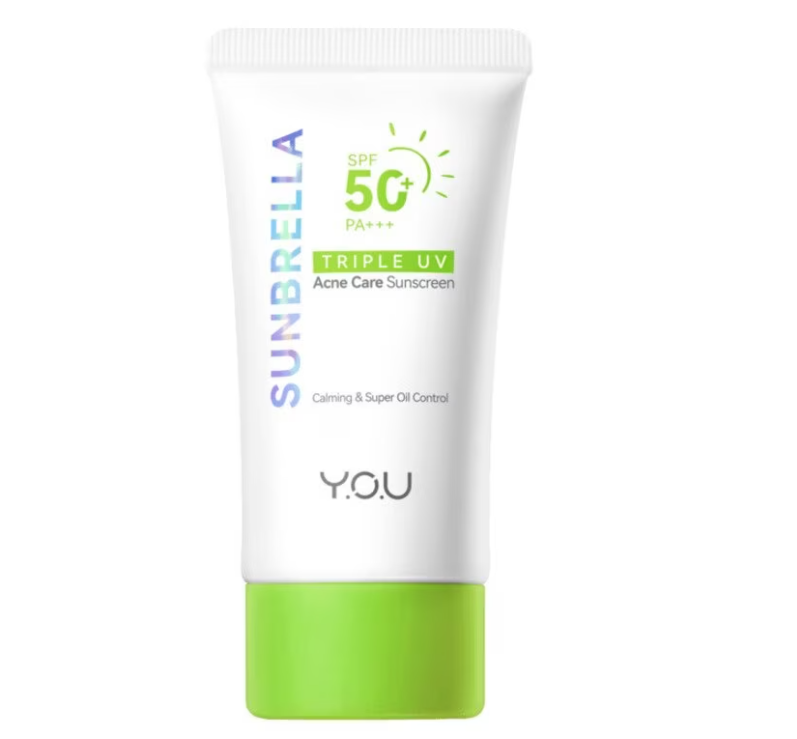
敏感肌热门温和防晒，成分简单低刺激，舒缓泛红肌肤，日常隔离防晒二合一，当做妆前打底温和不闷。
优点：低敏无刺激、舒缓维稳、温和亲肤
缺点：大量出汗需补涂
小建议：敏感肌日常通勤、户外都可使用
2. YOU 温和多色遮瑕盘
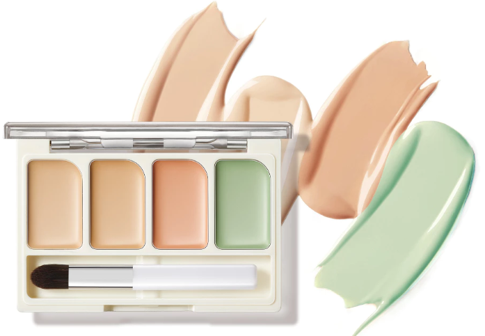
无刺激温和配方，轻薄不闷肤，修饰泛红、痘印、暗沉，减少彩妆对敏感皮肤的负担。
优点：低敏温和、遮盖自然、减少摩擦刺激
缺点：少量取用更贴合敏感肌
小建议：局部点涂，避免大面积厚涂
3. YOU 养肤温和气垫
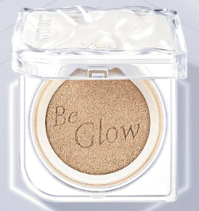
敏感肌友好型气垫，透气养肤配方，长时间上妆不容易闷痘、泛红，快速打造轻薄自然底妆。
优点：温和养肤、透气舒缓、上妆简单
缺点：遮瑕力中等
小建议：敏感肌日常淡妆、恢复期简化妆容
4. YOU 低敏双头眉笔
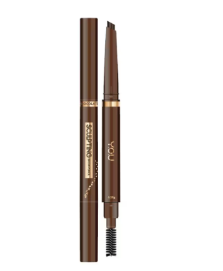
眼周敏感肌专用，质地柔和不拉扯皮肤，成分温和，耐汗持妆，减少眼周发痒泛红问题。
优点：低敏安全、上色自然、新手好上手
缺点：暴汗环境持妆会减弱
小建议：轻手化妆，减少皮肤摩擦
5. Wardah 低敏哑光粉底液
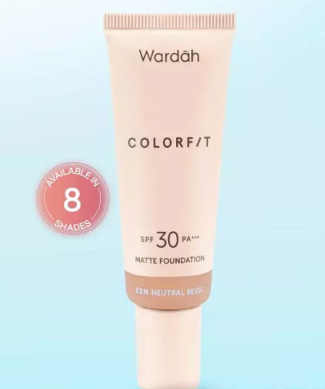
经过温和调配的友好配方，敏感肌实测不易致敏，妆感轻薄不厚重，稳定日常皮肤状态。
优点：配方温和、不闷痘、妆感干净
缺点：滋润度一般，干敏皮需保湿
小建议：敏感肌薄涂为主，降低皮肤负担
6. Wardah 温和柔焦散粉
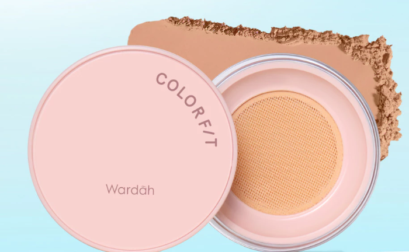
粉质柔软细腻，不含刺激成分，定妆同时保护敏感屏障，温和吸附多余油脂。
优点：低敏不刺激、柔焦毛孔、定妆自然
缺点：控油力中等
小建议：轻轻按压上妆，减少揉搓
7. Sister Ann 舒缓防水眼线笔
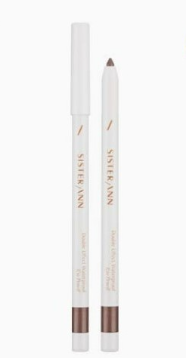
针对敏感眼周设计，笔触软糯不刺痒，温和不熏眼，防晕染，适合脆弱眼周肌肤。
优点：温和低敏、防晕舒适、日常安全
缺点：防水款卸妆要轻柔
小建议：简约眼尾画法，降低刺激
8. YOU 舒缓保湿定妆喷雾
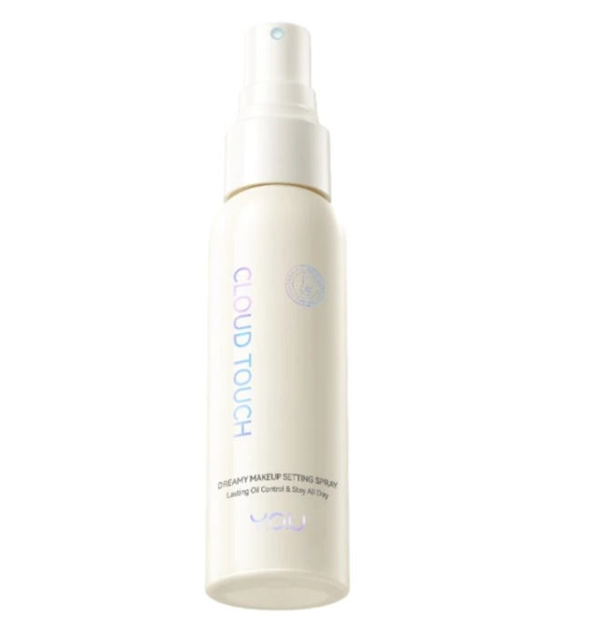
舒缓型定妆喷雾，安抚不稳定敏感肌，锁妆同时补水舒缓，减少换季、闷热带来的皮肤不适。
优点：修护维稳、温和舒缓、不拔干
缺点：控油表现普通
小建议：远距离喷洒，避免直接刺激脸部
9. Wardah 敏感肌专用眼妆套装
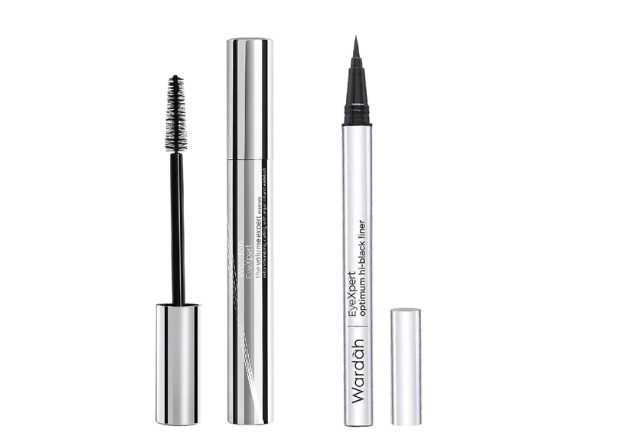
整套眼妆配方精简温和，不添加多余刺激成分，适合眼周容易敏感、泛红的人群日常使用。
优点：低敏安全、组合划算、日常淡妆适配
缺点：清洁需要温和卸妆
小建议：敏感肌长期淡妆安心使用